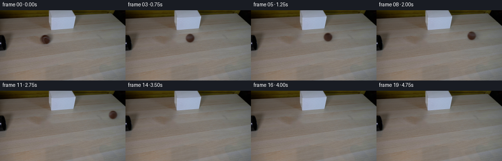
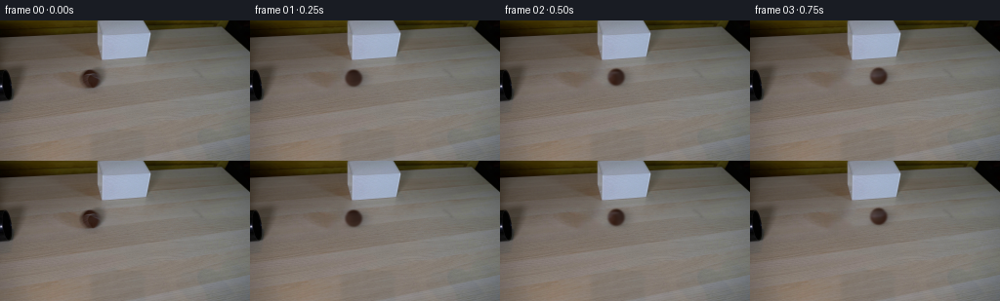
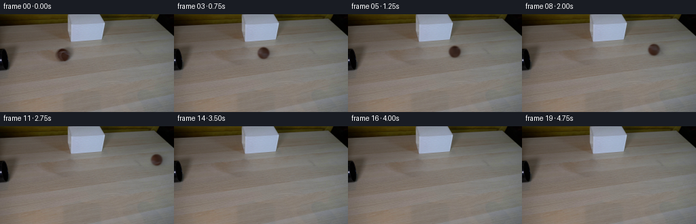
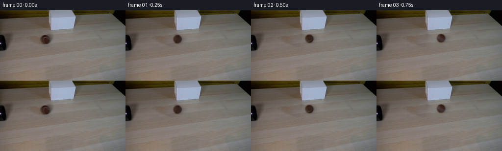
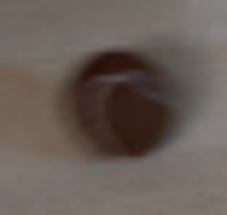
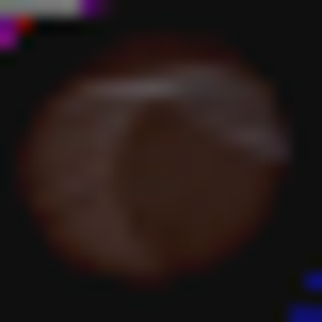
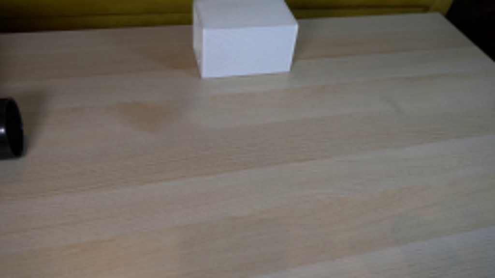
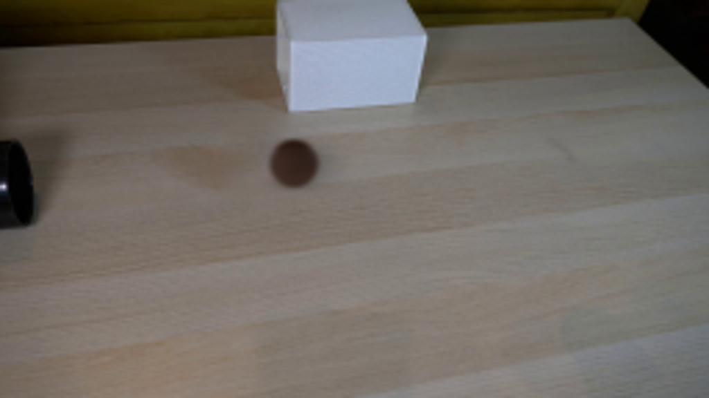
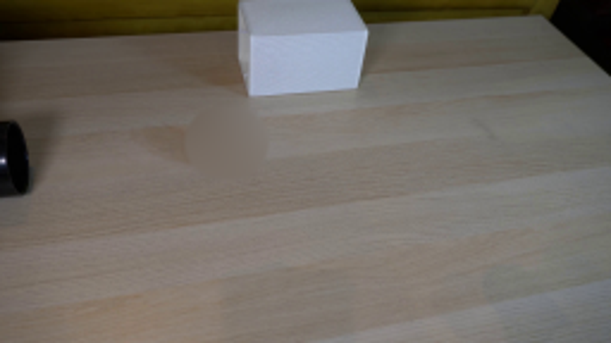
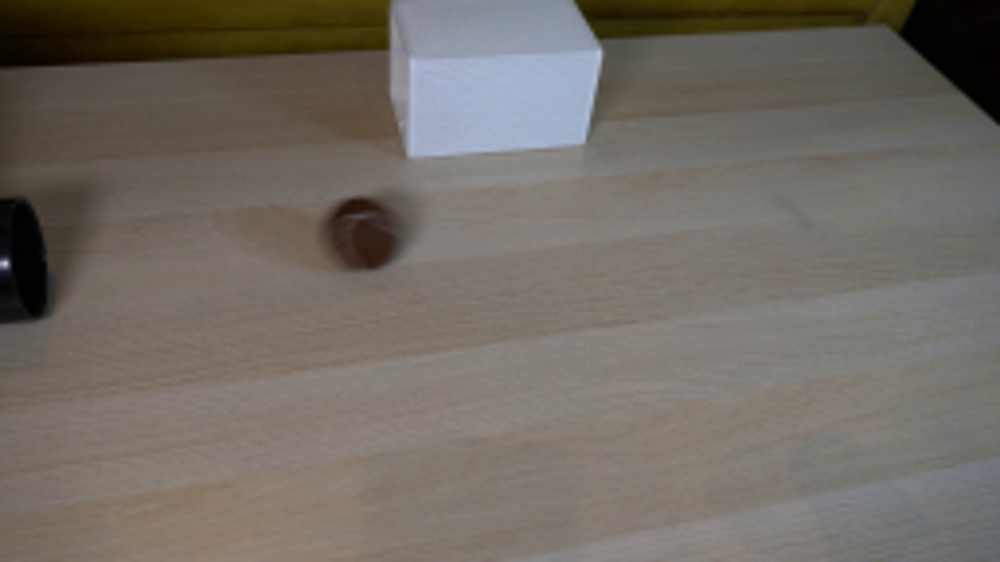

CODING AGENTS AS PIXEL WORLD MODELS
traex/GPT-6.1-Sol · 0148
点击播放 · 原生 RGB 像素
此结果可播放，但该运行尚未通过最终提交审核。页面展示不代表评测通过。
逐轮保存的候选
回放视频、检查图与代码变化。
每份候选均可单独播放。实际图片检查记录在下方工具轨迹中。
候选 01播放与检查图
点击播放 · 原生 RGB 像素


展开代码变化
--- 上一保存版本
+++ 本次保存版本
@@ -0,0 +1,109 @@
+from pathlib import Path
+import numpy as np
+import cv2
+from PIL import Image
+from scipy.ndimage import map_coordinates, gaussian_filter
+import artifact_io
+
+ROOT = Path(__file__).resolve().parent
+W, H = 256, 144
+S = 4
+START = np.array([92.7, 59.7])
+RADIUS = 8.65
+
+
+def lighting(u, v):
+ # The broad, subdued reflections of the matte brown felt under room light.
+ side = np.exp(-((u + .70)/.50)**2 - ((v + .02)/.90)**2)
+ top = np.exp(-((v + .80)/.28)**2)
+ return .91 + .25 * side - .18 * top - .03*v
+
+
+def make_background(first):
+ yy, xx = np.mgrid[:H, :W]
+ distance = ((xx-94.5)/18.5)**2 + ((yy-59.3)/16.3)**2
+ mask = (distance < 1).astype(np.uint8)*255
+ filled = cv2.inpaint(first, mask, 4, cv2.INPAINT_NS).astype(float)
+ # Restore the wood's fine grain using another part of the same plank.
+ src = cv2.remap(first.astype(np.float32), (xx-39).astype(np.float32),
+ (yy+3).astype(np.float32), cv2.INTER_LINEAR,
+ borderMode=cv2.BORDER_REFLECT)
+ grain = src-cv2.GaussianBlur(src, (0,0), 1.7)
+ feather = np.clip((1-distance)/.20, 0, 1)
+ filled += grain * feather[:,:,None] * .80
+ return np.clip(filled,0,255)
+
+
+def render(first, background, t):
+ # Straight horizontal motion on the table, viewed in perspective. Modest
+ # rolling resistance gradually reduces the translational speed.
+ traveled = 52.0*t - .75*t*t
+ cx, cy = START + np.array([traveled, -.078*traveled])
+ radius = RADIUS * (1-.00026*traveled)
+ out = background.copy()
+ if cx-radius-16 > W:
+ return out.astype(np.uint8)
+ yy, xx = np.mgrid[:H, :W]
+ # Soft cast shadow to the right, plus a small contact shadow below.
+ broad = np.exp(-.5*((xx-(cx+5.0))/7.0)**2-.5*((yy-(cy+.0))/5.0)**2)
+ contact = np.exp(-.5*((xx-cx)/5.8)**2-.5*((yy-(cy+radius*.83))/1.75)**2)
+ attenuation = .23*broad + .17*contact
+ out *= 1-attenuation[:,:,None]
+
+ xmin = max(0, int(cx-radius-5)); xmax = min(W,int(cx+radius+6))
+ ymin = max(0,int(cy-radius-5)); ymax = min(H,int(cy+radius+6))
+ if xmax <= xmin or ymax <= ymin:
+ return np.clip(out,0,255).astype(np.uint8)
+ gy,gx=np.mgrid[ymin*S:ymax*S, xmin*S:xmax*S]
+ # Coordinates at pixel-centred supersamples.
+ px=(gx+.5)/S-.5
+ py=(gy+.5)/S-.5
+ rgb_accum=np.zeros((*px.shape,3),float)
+ alpha_accum=np.zeros(px.shape,float)
+ angle=traveled/RADIUS
+ axis=np.array([.078, 1., 0.]); axis/=np.linalg.norm(axis)
+ # Integrate a short shutter interval; both surface and silhouette move.
+ for shutter in np.linspace(-.018,.018,5):
+ dt=(52-1.5*t)*shutter
+ u=(px-cx-dt)/radius
+ v=(py-cy+.078*dt)/radius
+ q=u*u+v*v
+ inside=(q<=1).astype(float)
+ nz=np.sqrt(np.maximum(0,1-q))
+ n=np.stack([u,v,nz],axis=-1)
+ # Inverse rolling rotation maps the visible hemisphere into material
+ # coordinates. The back hemisphere continues the same felt pattern.
+ a=-(angle+dt/RADIUS)
+ ca,sa=np.cos(a),np.sin(a)
+ dot=np.einsum('...i,i->...',n,axis)
+ body=n*ca+np.cross(axis,n)*sa+dot[:,:,None]*axis*(1-ca)
+ bu,bv=body[:,:,0],body[:,:,1]
+ br=np.sqrt(bu*bu+bv*bv)
+ # Avoid sampling the background at the blurred photographed boundary.
+ factor=np.minimum(1,.84/np.maximum(br,1e-6))
+ su=bu*factor; sv=bv*factor
+ coords=[START[1]+RADIUS*sv, START[0]+RADIUS*su]
+ surface=np.stack([map_coordinates(first[:,:,c].astype(float),coords,order=1,mode='nearest') for c in range(3)],-1)
+ surface *= (lighting(u,v)/lighting(su,sv))[:,:,None]
+ rgb_accum+=surface*inside[:,:,None]/5
+ alpha_accum+=inside/5
+ # Optical softness already present in the first photograph.
+ alpha=gaussian_filter(alpha_accum,.75*S)
+ rgb=np.stack([gaussian_filter(rgb_accum[:,:,c],.75*S) for c in range(3)],-1)
+ alpha=cv2.resize(alpha,(xmax-xmin,ymax-ymin),interpolation=cv2.INTER_AREA)
+ rgb=cv2.resize(rgb,(xmax-xmin,ymax-ymin),interpolation=cv2.INTER_AREA)
+ out[ymin:ymax,xmin:xmax]=out[ymin:ymax,xmin:xmax]*(1-alpha[:,:,None])+rgb
+ return np.clip(out,0,255).astype(np.uint8)
+
+
+def main():
+ first=np.asarray(Image.open(ROOT/'first_frame.png').convert('RGB'))
+ background=make_background(first)
+ frames=[first.copy()]
+ for index in range(1,20):
+ frames.append(render(first,background,index/4))
+ frames=np.asarray(frames,dtype=np.uint8)
+ artifact_io.save(frames,ROOT)
+
+if __name__=='__main__':
+ main()
候选 02播放与检查图
点击播放 · 原生 RGB 像素


展开代码变化
--- 上一保存版本
+++ 本次保存版本
@@ -21,17 +21,16 @@
def make_background(first):
yy, xx = np.mgrid[:H, :W]
- distance = ((xx-94.5)/18.5)**2 + ((yy-59.3)/16.3)**2
- mask = (distance < 1).astype(np.uint8)*255
- filled = cv2.inpaint(first, mask, 4, cv2.INPAINT_NS).astype(float)
- # Restore the wood's fine grain using another part of the same plank.
- src = cv2.remap(first.astype(np.float32), (xx-39).astype(np.float32),
- (yy+3).astype(np.float32), cv2.INTER_LINEAR,
- borderMode=cv2.BORDER_REFLECT)
- grain = src-cv2.GaussianBlur(src, (0,0), 1.7)
- feather = np.clip((1-distance)/.20, 0, 1)
- filled += grain * feather[:,:,None] * .80
- return np.clip(filled,0,255)
+ mask = ((((xx-94)/24)**2+((yy-59)/16)**2) < 1).astype(np.uint8)*255
+ # Reconstruct the occluded tabletop with grain from the same plank,
+ # matching its boundary lighting by a local gradient-domain blend.
+ src = cv2.remap(first, (xx+48).astype(np.float32),
+ (yy-4).astype(np.float32), cv2.INTER_LINEAR,
+ borderMode=cv2.BORDER_REFLECT)
+ left,top,width,height=cv2.boundingRect(mask)
+ center=(left+width//2,top+height//2)
+ filled=cv2.seamlessClone(src,first,mask,center,cv2.NORMAL_CLONE)
+ return filled.astype(float)
def render(first, background, t):
@@ -78,6 +77,9 @@
dot=np.einsum('...i,i->...',n,axis)
body=n*ca+np.cross(axis,n)*sa+dot[:,:,None]*axis*(1-ca)
bu,bv=body[:,:,0],body[:,:,1]
+ # The tennis ball's joined felt panels continue around both hemispheres.
+ back = body[:,:,2] < 0
+ bv = np.where(back, -bv, bv)
br=np.sqrt(bu*bu+bv*bv)
# Avoid sampling the background at the blurred photographed boundary.
factor=np.minimum(1,.84/np.maximum(br,1e-6))
可观测工具轨迹
实际执行的命令与返回图片。
命令 1exit 0
/bin/bash -lc "ls -la && cat prompt.txt && echo ' ---RULES---' && cat GENERATION_RULES.md"
命令 2exit 0
/bin/bash -lc "cat artifact_io.py && python - <<'PY'
from PIL import Image
im=Image.open('first_frame.png'); print(im.size)
im.resize((1024,576)).save('.tmp/first_large.png')
PY"命令 3exit 0
/bin/bash -lc "python - <<'PY'
from PIL import Image
im=Image.open('first_frame.png')
im.crop((72,42,111,79)).resize((468,444)).save('.tmp/ball.png')
PY"命令 4exit 0
/bin/bash -lc "python - <<'PY' import cv2, scipy, numpy as np print(cv2.__version__) PY"
命令 5exit 0
/bin/bash -lc "python - <<'PY'
import numpy as np, cv2
from PIL import Image
im=np.array(Image.open('first_frame.png'))
y,x=np.mgrid[:144,:256]
mask=(((x-94)/18)**2+((y-59)/16)**2<1).astype('uint8')*255
for m,name in [(cv2.INPAINT_TELEA,'telea'),(cv2.INPAINT_NS,'ns')]:
out=cv2.inpaint(im,mask,4,m)
Image.fromarray(out).resize((1024,576)).save('.tmp/bg_'+name+'.png')
print(im[60,93], im[53,90], im[65,98],im[57,86])
PY"命令 6exit 0
/bin/bash -lc "python - <<'PY'
import numpy as np
from PIL import Image
im=np.array(Image.open('first_frame.png'))
for y in range(49,71,2):
print(y, ['%d,%d,%d'%tuple(im[y,x]) for x in range(83,105,2)])
PY"命令 7exit 0
/bin/bash -lc "python - <<'PY'
import cv2, numpy as np
from PIL import Image
im=np.array(Image.open('first_frame.png')).astype(float)
y,x=np.mgrid[:144,:256]; sx=(x-92.8)/8.8;sy=(y-59.65)/8.8
m=sx*sx+sy*sy<.65
X=np.stack([np.ones_like(sx),sx,sy,sx*sx,sy*sy,sx*sy],axis=-1)
for c in range(3):
coef=np.linalg.lstsq(X[m],im[:,:,c][m],rcond=None)[0];print(coef)
PY"命令 8exit 0
/bin/bash -lc "cat > .tmp/experiment.py <<'PY'
import numpy as np, cv2
from PIL import Image
im=np.asarray(Image.open('first_frame.png')).astype(float)
y,x=np.mgrid[:144,:256]
mask=(((x-94)/18)**2+((y-59)/16)**2<1).astype('uint8')*255
bg=cv2.inpaint(im.astype('uint8'),mask,4,cv2.INPAINT_NS).astype(float)
cx=92.7;cy=59.6;r=8.5
scale=5
Y,X=np.mgrid[:144*scale,:256*scale]; a=((X/scale-cx)**2+(Y/scale-cy)**2<r*r).astype('float32')
a=cv2.GaussianBlur(a,(0,0),1.05*scale);a=cv2.resize(a,(256,144),interpolation=cv2.INTER_AREA)
obj=(im-bg*(1-a[:,:,None]))/np.maximum(a[:,:,None],.01)
obj=np.clip(obj,15,110)
Image.fromarray(obj[50:70,83:103].astype('uint8')).resize((400,400)).save('.tmp/extracted.png')
Image.fromarray((a*255).astype('uint8')).save('.tmp/alpha.png')
PY
python .tmp/experiment.py"命令 9exit 0
/bin/bash -lc "cat > generate.py <<'PY'
from pathlib import Path
import numpy as np
import cv2
from PIL import Image
from scipy.ndimage import map_coordinates, gaussian_filter
import artifact_io
ROOT = Path(__file__).resolve().parent
W, H = 256, 144
S = 4
START = np.array([92.7, 59.7])
RADIUS = 8.65
def lighting(u, v):
# The broad, subdued reflections of the matte brown felt under room light.
side = np.exp(-((u + .70)/.50)**2 - ((v + .02)/.90)**2)
top = np.exp(-((v + .80)/.28)**2)
return .91 + .25 * side - .18 * top - .03*v
def make_background(first):
yy, xx = np.mgrid[:H, :W]
distance = ((xx-94.5)/18.5)**2 + ((yy-59.3)/16.3)**2
mask = (distance < 1).astype(np.uint8)*255
filled = cv2.inpaint(first, mask, 4, cv2.INPAINT_NS).astype(float)
# Restore the wood's fine grain using another part of the same plank.
src = cv2.remap(first.astype(np.float32), (xx-39).astype(np.float32),
(yy+3).astype(np.float32), cv2.INTER_LINEAR,
borderMode=cv2.BORDER_REFLECT)
grain = src-cv2.GaussianBlur(src, (0,0), 1.7)
feather = np.clip((1-distance)/.20, 0, 1)
filled += grain * feather[:,:,None] * .80
return np.clip(filled,0,255)
def render(first, background, t):
# Straight horizontal motion on the table, viewed in perspective. Modest
# rolling resistance gradually reduces the translational speed.
traveled = 52.0*t - .75*t*t
cx, cy = START + np.array([traveled, -.078*traveled])
radius = RADIUS * (1-.00026*traveled)
out = background.copy()
if cx-radius-16 > W:
return out.astype(np.uint8)
yy, xx = np.mgrid[:H, :W]
# Soft cast shadow to the right, plus a small contact shadow below.
broad = np.exp(-.5*((xx-(cx+5.0))/7.0)**2-.5*((yy-(cy+.0))/5.0)**2)
contact = np.exp(-.5*((xx-cx)/5.8)**2-.5*((yy-(cy+radius*.83))/1.75)**2)
attenuation = .23*broad + .17*contact
out *= 1-attenuation[:,:,None]
xmin = max(0, int(cx-radius-5)); xmax = min(W,int(cx+radius+6))
ymin = max(0,int(cy-radius-5)); ymax = min(H,int(cy+radius+6))
if xmax <= xmin or ymax <= ymin:
return np.clip(out,0,255).astype(np.uint8)
gy,gx=np.mgrid[ymin*S:ymax*S, xmin*S:xmax*S]
# Coordinates at pixel-centred supersamples.
px=(gx+.5)/S-.5
py=(gy+.5)/S-.5
rgb_accum=np.zeros((*px.shape,3),float)
alpha_accum=np.zeros(px.shape,float)
angle=traveled/RADIUS
axis=np.array([.078, 1., 0.]); axis/=np.linalg.norm(axis)
# Integrate a short shutter interval; both surface and silhouette move.
for shutter in np.linspace(-.018,.018,5):
dt=(52-1.5*t)*shutter
u=(px-cx-dt)/radius
v=(py-cy+.078*dt)/radius
q=u*u+v*v
inside=(q<=1).astype(float)
nz=np.sqrt(np.maximum(0,1-q))
n=np.stack([u,v,nz],axis=-1)
# Inverse rolling rotation maps the visible hemisphere into material
# coordinates. The back hemisphere continues the same felt pattern.
a=-(angle+dt/RADIUS)
ca,sa=np.cos(a),np.sin(a)
dot=np.einsum('...i,i->...',n,axis)
body=n*ca+np.cross(axis,n)*sa+dot[:,:,None]*axis*(1-ca)
bu,bv=body[:,:,0],body[:,:,1]
br=np.sqrt(bu*bu+bv*bv)
# Avoid sampling the background at the blurred photographed boundary.
factor=np.minimum(1,.84/np.maximum(br,1e-6))
su=bu*factor; sv=bv*factor
coords=[START[1]+RADIUS*sv, START[0]+RADIUS*su]
surface=np.stack([map_coordinates(first[:,:,c].astype(float),coords,order=1,mode='nearest') for c in range(3)],-1)
surface *= (lighting(u,v)/lighting(su,sv))[:,:,None]
rgb_accum+=surface*inside[:,:,None]/5
alpha_accum+=inside/5
# Optical softness already present in the first photograph.
alpha=gaussian_filter(alpha_accum,.75*S)
rgb=np.stack([gaussian_filter(rgb_accum[:,:,c],.75*S) for c in range(3)],-1)
alpha=cv2.resize(alpha,(xmax-xmin,ymax-ymin),interpolation=cv2.INTER_AREA)
rgb=cv2.resize(rgb,(xmax-xmin,ymax-ymin),interpolation=cv2.INTER_AREA)
out[ymin:ymax,xmin:xmax]=out[ymin:ymax,xmin:xmax]*(1-alpha[:,:,None])+rgb
return np.clip(out,0,255).astype(np.uint8)
def main():
first=np.asarray(Image.open(ROOT/'first_frame.png').convert('RGB'))
background=make_background(first)
frames=[first.copy()]
for index in range(1,20):
frames.append(render(first,background,index/4))
frames=np.asarray(frames,dtype=np.uint8)
artifact_io.save(frames,ROOT)
if __name__=='__main__':
main()
PY
python generate.py"命令 10exit 0
/bin/bash -lc "python - <<'PY'
from PIL import Image
im=Image.open('frames/14.png');im.resize((1024,576)).save('.tmp/result_large.png')
PY"命令 11exit 0
/bin/bash -lc "python - <<'PY'
from PIL import Image
Image.open('frames/01.png').resize((1024,576)).save('.tmp/one_large.png')
PY"命令 12exit 0
/bin/bash -lc "python - <<'PY'
import numpy as np,cv2
from PIL import Image
im=np.array(Image.open('first_frame.png')).astype(float)
y,x=np.mgrid[:144,:256];dx=x-94.5;dy=y-59.3
D=(dx/18.5)**2+(dy/16.3)**2
X=np.stack([np.ones_like(x),dx,dy,dx*dx,dx*dy,dy*dy],-1)
ann=(D>1)&(D<2.2)
vals=np.linalg.lstsq(X[ann],im[ann],rcond=None)[0]
pred=X@vals
blend=np.clip((1-D)/.2,0,1)
bg=im*(1-blend[:,:,None])+pred*blend[:,:,None]
# residual object at rim needs cover
mask=(D<1).astype('uint8')*255
ns=cv2.inpaint(im.astype('uint8'),mask,4,cv2.INPAINT_NS).astype(float)
bg=ns*(1-blend[:,:,None])+pred*blend[:,:,None]
Image.fromarray(np.clip(bg,0,255).astype('uint8')).resize((1024,576)).save('.tmp/bg_poly.png')
PY"命令 13exit 0
/bin/bash -lc "python - <<'PY'
import numpy as np,cv2
from PIL import Image
im=np.array(Image.open('first_frame.png'))
y,x=np.mgrid[:144,:256]
mask=(((x-94.5)/18.5)**2+((y-59.3)/16.3)**2<1).astype('uint8')*255
src=cv2.remap(im,(x+48).astype('float32'),(y-4).astype('float32'),cv2.INTER_LINEAR,borderMode=cv2.BORDER_REFLECT)
# seamless clone centering mask bounding rect must match
bbox=cv2.boundingRect(mask); print(bbox)
center=(bbox[0]+bbox[2]//2,bbox[1]+bbox[3]//2)
out=cv2.seamlessClone(src,im,mask,center,cv2.NORMAL_CLONE)
Image.fromarray(out).resize((1024,576)).save('.tmp/bg_poisson.png')
PY"命令 14exit 0
/bin/bash -lc "python - <<'PY'
import numpy as np,cv2
from PIL import Image
im=np.array(Image.open('first_frame.png'));y,x=np.mgrid[:144,:256]
mask=(((x-94.5)/22)**2+((y-59.3)/17.0)**2<1).astype('uint8')*255
bbox=cv2.boundingRect(mask); center=(bbox[0]+bbox[2]//2,bbox[1]+bbox[3]//2)
for delta in [-48,48]:
src=cv2.remap(im,(x+delta).astype('float32'),(y-.085*delta).astype('float32'),cv2.INTER_LINEAR,borderMode=cv2.BORDER_REFLECT)
out=cv2.seamlessClone(src,im,mask,center,cv2.NORMAL_CLONE)
Image.fromarray(out).resize((1024,576)).save('.tmp/bg_poisson%d.png'%delta)
PY"命令 15exit 0
/bin/bash -lc "python - <<'PY'
import numpy as np,cv2
from PIL import Image
im=np.array(Image.open('first_frame.png')); y,x=np.mgrid[:144,:256]
src=cv2.remap(im,(x+48).astype('float32'),(y-4).astype('float32'),cv2.INTER_LINEAR,borderMode=cv2.BORDER_REFLECT)
for rad in [17,18,19,20,21,22,23,24]:
mask=(((x-94)/rad)**2+((y-59)/16)**2<1).astype('uint8')*255
rect=cv2.boundingRect(mask);center=(rect[0]+rect[2]//2,rect[1]+rect[3]//2)
out=cv2.seamlessClone(src,im,mask,center,cv2.NORMAL_CLONE)
print(rad, rect, out[60,93], np.sum(abs(out.astype(float)-im)))
if rad in [20,22,24]: Image.fromarray(out).resize((1024,576)).save('.tmp/bg_r%d.png'%rad)
PY"命令 16exit 0
/bin/bash -lc "python - <<'PY'
p='generate.py'
s=open(p).read();start=s.index(' distance =',s.index('def make_background'));end=s.index('\\n\\n\\ndef render',start)
s=s[:start]+''' mask = ((((xx-94)/24)**2+((yy-59)/16)**2) < 1).astype(np.uint8)*255
# Reconstruct the occluded tabletop with grain from the same plank,
# matching its boundary lighting by a local gradient-domain blend.
src = cv2.remap(first, (xx+48).astype(np.float32),
(yy-4).astype(np.float32), cv2.INTER_LINEAR,
borderMode=cv2.BORDER_REFLECT)
left,top,width,height=cv2.boundingRect(mask)
center=(left+width//2,top+height//2)
filled=cv2.seamlessClone(src,first,mask,center,cv2.NORMAL_CLONE)
return filled.astype(float)'''+s[end:]
# retain subtle shading and seam also on unseen side via two-fold surface continuation
s=s.replace('bu,bv=body[:,:,0],body[:,:,1]', '''bu,bv=body[:,:,0],body[:,:,1]
# The tennis ball's joined felt panels continue around both hemispheres.
back = body[:,:,2] < 0
bv = np.where(back, -bv, bv)''')
open(p,'w').write(s)
PY
python generate.py
python - <<'PY'
import numpy as np
from PIL import Image
from pathlib import Path
first=np.array(Image.open('first_frame.png'))
frames=np.stack([np.array(Image.open(p)) for p in sorted(Path('frames').glob('*.png'))])
print('shape:',frames.shape, 'dtype:',frames.dtype, 'frame zero exact:',np.array_equal(first,frames[0]))
PY"视觉工具实际返回图片 1
视觉工具实际返回图片 2

视觉工具实际返回图片 3
视觉工具实际返回图片 4

视觉工具实际返回图片 5

视觉工具实际返回图片 6

视觉工具实际返回图片 7

视觉工具实际返回图片 8

视觉工具实际返回图片 9
视觉工具实际返回图片 10

视觉工具实际返回图片 11
保存候选 2 份；完成命令 16 次；可验证图片返回 11 张。原始 API 响应与完整日志保留在本地。